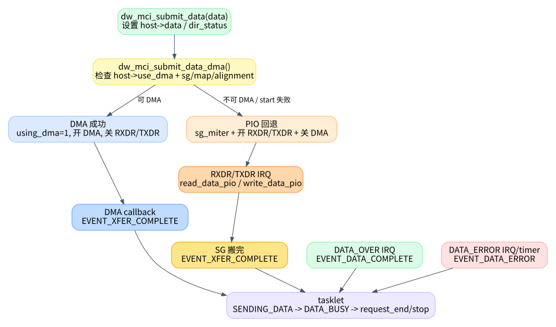

03. 数据路径：DMA、PIO 与 FIFO
数据路径是 dw_mmc.c
里最容易和状态机混在一起的部分。先抓住一个原则：dw_mci_submit_data()
只是把“怎么搬数据”准备好，真正判断“请求是否结束”仍然在 tasklet 里。

1. 数据请求启动前做了什么
有 data 的命令在 __dw_mci_start_request()
里先设置数据相关寄存器，再发命令。关键代码在
kernel/drivers/mmc/host/dw_mmc.c:1384 到
kernel/drivers/mmc/host/dw_mmc.c:1405：
dw_mci_set_data_timeout()根据data->timeout_ns配 TMOUT。BYTCNT = blksz * blocks，BLKSIZ = blksz。dw_mci_submit_data()设置 DMA/PIO。- 最后才
dw_mci_start_command()。
这个顺序说明 data path 是命令启动前的准备工作，不是命令完成后才开始配置。
2. DMA
预映射：pre_req/post_req
dw_mci_pre_req() 和 dw_mci_post_req() 是
mmc_host_ops 暴露给 core 的优化入口，定义在
kernel/drivers/mmc/host/dw_mmc.c:960 和
kernel/drivers/mmc/host/dw_mmc.c:977。
pre_req 会尝试提前 dma_map_sg()，成功则把
data->host_cookie 标成
COOKIE_PRE_MAPPED。真正请求开始时，dw_mci_pre_dma_transfer()
如果发现已经 pre-mapped，就直接返回 sg_len，见
kernel/drivers/mmc/host/dw_mmc.c:929。
这层优化不改变状态机，只减少请求开始时的 DMA mapping 成本。
3. DMA 选择与失败回退
dw_mci_init_dma() 在 probe 阶段根据 HCON 选择
IDMAC、EDMAC 或 PIO，定义在
kernel/drivers/mmc/host/dw_mmc.c:3235。大意是：
| HCON transfer mode | 驱动内部模式 | 说明 |
|---|---|---|
| internal DMA | TRANS_MODE_IDMAC |
使用控制器内部 IDMAC descriptor ring |
| DW DMA / generic DMA | TRANS_MODE_EDMAC |
使用外部 DMA engine channel |
| no usable DMA | TRANS_MODE_PIO |
CPU 通过 FIFO 读写 |
真正每次请求是否走 DMA，在 dw_mci_submit_data_dma()
里决定，定义在
kernel/drivers/mmc/host/dw_mmc.c:1128。它会：
- 检查
host->use_dma，没有 DMA 则返回失败。 - 调
dw_mci_pre_dma_transfer()检查长度、block size、SG offset/length 是否适合 DMA，见kernel/drivers/mmc/host/dw_mmc.c:922。 - 设置
host->using_dma = 1。 - 调整 FIFO watermark，打开
SDMMC_CTRL_DMA_ENABLE，屏蔽 RXDR/TXDR PIO 中断。 - 调
dma_ops->start()。如果 start 失败，停止 DMA 并让当前请求回退 PIO，见kernel/drivers/mmc/host/dw_mmc.c:1175。
因此，host->use_dma 表示这个 host 支持哪种
DMA，host->using_dma 表示当前 request 是否真的在用
DMA。这两个字段不能混为一谈。
4. PIO 路径做了什么
当 dw_mci_submit_data_dma()
失败时，dw_mci_submit_data() 进入 PIO 分支，定义在
kernel/drivers/mmc/host/dw_mmc.c:1187。
PIO 分支会启动 SG iterator，设置 host->sg，清 partial
buffer，打开 RXDR/TXDR 中断，关闭
SDMMC_CTRL_DMA_ENABLE，并恢复 PIO 用的 FIFOTH，见
kernel/drivers/mmc/host/dw_mmc.c:1206 到
kernel/drivers/mmc/host/dw_mmc.c:1239。
真正搬数据的是 IRQ handler 调用的两个函数：
- 读：
dw_mci_read_data_pio()，定义在kernel/drivers/mmc/host/dw_mmc.c:2810。它根据 FIFO count 从 FIFO 拉数据，更新data->bytes_xfered。 - 写：
dw_mci_write_data_pio()，定义在kernel/drivers/mmc/host/dw_mmc.c:2866。它根据 FIFO 剩余空间往 FIFO 推数据，更新data->bytes_xfered。
PIO 读写完成 SG 后，会设置 EVENT_XFER_COMPLETE。读路径在
kernel/drivers/mmc/host/dw_mmc.c:2861，写路径在
kernel/drivers/mmc/host/dw_mmc.c:2917。
5. DMA 完成只代表内存侧搬完
DMA callback 是 dw_mci_dmac_complete_dma()，定义在
kernel/drivers/mmc/host/dw_mmc.c:510。它做
cleanup，然后设置 EVENT_XFER_COMPLETE 并 schedule
tasklet，见 kernel/drivers/mmc/host/dw_mmc.c:532。
这个事件名字容易误导：XFER_COMPLETE 不是整个 MMC data
transaction 完成，只是驱动认为内存/FIFO/DMA 这侧 transfer
已完成。卡侧是否真正 data over，要等主控制器中断
SDMMC_INT_DATA_OVER，IRQ handler 在
kernel/drivers/mmc/host/dw_mmc.c:3005 设置
EVENT_DATA_COMPLETE。
这就是 tasklet 里为什么有两个状态：
| 状态 | 等待事件 | 意义 |
|---|---|---|
STATE_SENDING_DATA |
EVENT_XFER_COMPLETE |
等内存侧/DMA/PIO 搬完 |
STATE_DATA_BUSY |
EVENT_DATA_COMPLETE |
等卡侧 data over，确认 data status |
如果把这两个事件合成一个“data done”，状态机会立刻变得难懂。
6.
dw_mci_data_complete() 只在 data over 后判断最终 data
error
dw_mci_data_complete() 定义在
kernel/drivers/mmc/host/dw_mmc.c:2037。它读取
host->data_status，根据 DRTO/DCRC/EBE/SBE 映射成
data->error。没有错误时设置
data->bytes_xfered = blocks * blksz。
这也解释了一个现象：PIO/DMA 路径可能已经更新过
bytes_xfered，但最终成功时
dw_mci_data_complete()
会按完整块数覆盖为全量。错误时则根据错误类型处理，必要时 reset 控制器清
FIFO，见 kernel/drivers/mmc/host/dw_mmc.c:2070。
7. 读数据路径时的检查清单
排查“数据没回来”时，不要只盯着 tasklet 状态。按下面顺序看：
- 当前请求是否有
data，BYTCNT/BLKSIZ是否设置。 host->use_dma是 IDMAC、EDMAC 还是 PIO。- 当前请求
host->using_dma是否为 1。 - 如果 DMA，callback 有没有设置
EVENT_XFER_COMPLETE。 - 如果 PIO，RXDR/TXDR 中断是否持续触发，
host->sg是否走到 NULL。 EVENT_XFER_COMPLETE和EVENT_DATA_COMPLETE哪一个缺失。host->data_status是否带 DRTO/DCRC/EBE/SBE。